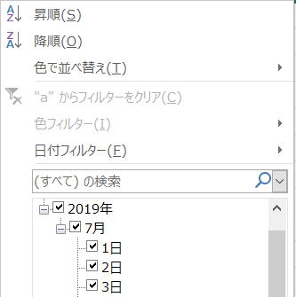

第89回.オートフィルタｰ（AutoFilter）

オートフィルタはExcelのデータベースとしての非常に強力な機能を提供してくれています、
マクロVBAで、必要なデータだけに絞り込んで他のシートにコピーしたり、
不要なデータを一括で削除したりする場合は、とても高速に処理することができます。
ワークシートのAutoFilterModeプロパティ
AutoFilterオブジェクト
以下順に説明します。
Range.AutoFilterメソッド
Range.AutoFilter(Field, Criteria1, Operator, Criteria2, VisibleDropDown)
| Field | フィルターの対象となるフィールド番号を整数で指定します。 フィールド番号は、リストの左側から始まります。 つまり、最も左側にあるフィールドはフィールド番号 1 になります。 |
| Criteria1 | 抽出条件となる文字列 ("101"など) を指定します。 "="と指定すると、空白セルが抽出され、"<>" と指定すると空白以外のフィールドが抽出されます。 この引数を省略すると、抽出条件は All になります。 引数OperatorにxlTop10Itemsが指定されている場合は、引数 Criteria1に項目数を指定します (たとえば "10")。 |
| Operator |
フィルターの種類をXlAutoFilterOperatorクラスの定数のいずれかで指定します。 |
| Criteria2 | 2 番目の抽出条件となる文字列を指定します。 引数 Criteria1および引数 Operatorと組み合わせて使い、複合抽出条件を指定します。 |
| VisibleDropDown | Trueを指定すると、フィルターのフィールドにあるオートフィルターのドロップダウン矢印を表示します。 Falseを指定すると、フィルターのフィールドにオートフィルターのドロップダウン矢印を非表示にします。 既定値は True です。 |
Operatorに指定するXlAutoFilterOperatorクラスの定数
| xlAnd | 抽出条件 1 と抽出条件 2 の論理演算子 AND |
| xlBottom10Items | 表示される最低値項目 (抽出条件 1 で指定される項目数) |
| xlBottom10Percent | 表示される最低値項目 (抽出条件 1 で指定される割合) |
| xlFilterCellColor | セルの色 |
| xlFilterDynamic | 動的フィルター |
| xlFilterFontColor | フォントの色 |
| xlFilterIcon | フィルター アイコン |
| xlFilterValues | フィルターの値 |
| xlOr | 抽出条件 1 または抽出条件 2 の論理演算子 OR |
| xlTop10Items | 表示される最高値項目 (抽出条件 1 で指定される項目数) |
| xlTop10Percent | 表示される最高値項目 (抽出条件 1 で指定される割合) |
既に、オートフィルターのドロップダウン矢印を表示されている場合は、これを解除します。
AutoFilterメソッドの使用例
Range("A1").AutoFilter Field:=1, Criteria1:="1",
Operator:=xlFilterValues
A1のアクティブ セル領域にオートフィルタを設定し、
１列(A列)を"1"で絞り込みます。
AutoFilterModeプロパティ
このプロティに値を設定することで、オートフィルターの状態を取得・設定できます。
True : シートにオートフィルターの下向き矢印を表示します。
False : シートにオートフィルターの下向き矢印を消します。
AutoFilterオブジェクト
ワークシート.AutoFilter
このAutoFilter自体はプロパティですが、このプロパティを経由してAutoFilterオブジェクトにアクセスできます。
| ApplyFilter | 指定された Autofilter オブジェクトを適用します。 |
| ShowAllData | AutoFilter オブジェクトから返されるデータをすべて表示します。 |
| Application | 対象となるオブジェクトが指定されない場合は、Excel アプリケーション (Application オブジェクト) を返します。 対象となるオブジェクトが指定された場合は、指定されたオブジェクトを作成した Application オブジェクトを返します。 OLE オートメーションを使っていて、オブジェクトのアプリケーションにアクセスするときなどに、このプロパティを使います。 値の取得のみ可能です。 |
| Creator | 現在のオブジェクトが作成されたアプリケーションを示す 32 ビットの整数を取得します。 値の取得のみ可能です。長整数型 (Long) の値を使用します。 |
| FilterMode | ワークシートがオートフィルター フィルター モードの場合、True を返します。値の取得のみ可能です。 ブール型 (Boolean) の値を使用します。 |
| Filters | オートフィルター範囲でのすべてのフィルターを表す Filters コレクションを返します。 値の取得のみ可能です。 |
| Parent | 指定されたオブジェクトの親オブジェクトを取得します。 値の取得のみ可能です。 |
| Range | 指定された AutoFilter の適用先の範囲を表す Range オブジェクトを返します。 |
| Sort | AutoFilter コレクションの並べ替え列と並べ替え順序を取得します。 |
オートフィルタのVBA使用例
With Sheets("Sheet1")
'Sheet1のA1のアクティブ セル領域の１列目を"1"で絞り込み
.Range("A1").AutoFilter Field:=1,
Criteria1:="1"
'Sheet2へコピー
.Range("A1").CurrentRegion.Copy
Sheets("Sheet2").Range("A1").PasteSpecial
Paste:=xlPasteValues
'オートフィルタを解除
.AutoFilterMode = False
End
With
Application.CutCopyMode = False
Sheet1のA1のアクティブ セル領域の、１列目を"1"で絞り込み、
Sheet2へコピーしています。
.AutoFilterMode = Falseは、.Range("A1").AutoFilterでも同じです。
Dim i As Long, Title As String
With ActiveSheet
'オートフィルタが適用されているか判定
If .AutoFilterMode
Then
'オートフィルタの列数
For i = 1 To .AutoFilter.Filters.Count
'絞り込みされているか判定
If
.AutoFilter.Filters(i).On
Then
'全てを表示
.AutoFilter.ShowAllData
Exit For
End
If
Next i
End If
End With
オートフィルタで絞り込まれている場合、絞り込みを解除し全て表示しています。
日付のフィルタ
以下を参考にして下さい。
「マクロの記録で覚えるVBA」第18回.オートフィルタ
オートフィルタまとめ
以下を参考に、効率よく理解しやすい方法を考えましょう。
オートフィルタ（AutoFilter）の使い方まとめ
以下はVBAクラスですが、オートフィルタの細部を扱っていますので、
オートフィルタの詳しい情報や設定方法を知りたい場合には参考になるはずです。
オートフィルタを退避回復するVBAクラス
同じテーマ「マクロVBA入門」の記事
第85回.結合セルの扱い
第86回.総合練習問題10
第88回.並べ替え（Sort）
第89回.オートフィルタｰ（AutoFilter）
第90回.フィルターオプションの設定（AdvancedFilter）
第91回.条件付き書式（FormatCondition）
第126回.入力規則（Validation）
第92回.名前定義（Names）
第93回.ピボットテーブル（PivotTable）
第94回.コメント（Comment）
第95回.ハイパーリンク（Hyperlink）
新着記事NEW ・・・新着記事一覧を見る
VBA100本ノック 100本目：WEBから100本ノックのリストを取得｜VBA練習問題（3月3日）
VBA100本ノック 99本目：自動席替え（行列と前後左右が全て違うように）｜VBA練習問題（3月2日）
VBA100本ノック 98本目：席替えルールが守られているか確認｜VBA練習問題（3月1日）
VBA100本ノック 97本目：Accessデータを取得（グループ集計）｜VBA練習問題（2月27日）
VBA100本ノック 96本目：Accessデータを取得（マスタ結合&抽出）｜VBA練習問題（2月26日）
VBA100本ノック 95本目：図形のテキストを検索するフォーム作成｜VBA練習問題（2月24日）
VBA100本ノック 94本目：表範囲からHTMLのtableタグを作成｜VBA練習問題（2月23日）
VBA100本ノック 93本目：複数ブックを連結して再分割｜VBA練習問題（2月22日）
VBA100本ノック 92本目：セルの色を16進で返す関数｜VBA練習問題（2月20日）
VBA100本ノック 91本目：時間計算（残業時間の月間合計）｜VBA練習問題（2月19日）
アクセスランキング ・・・ ランキング一覧を見る
1.最終行の取得（End,Rows.Count）｜VBA入門
2.RangeとCellsの使い方｜VBA入門
3.変数宣言のDimとデータ型｜VBA入門
4.マクロって何？VBAって何？｜VBA入門
5.Range以外の指定方法（Cells,Rows,Columns）｜VBA入門
6.セルのコピー&値の貼り付け（PasteSpecial）｜VBA入門
7.繰り返し処理（For Next)｜VBA入門
8.セルに文字を入れるとは（Range,Value）｜VBA入門
9.マクロはどこに書くの（VBEの起動）｜VBA入門
10.とにかく書いてみよう（Sub,End Sub）｜VBA入門
このサイトがお役に立ちましたら「シェア」「Bookmark」をお願いいたします。
記述には細心の注意をしたつもりですが、
間違いやご指摘がありましたら、「お問い合わせ」からお知らせいただけると幸いです。
掲載のVBAコードは動作を保証するものではなく、あくまでVBA学習のサンプルとして掲載しています。
掲載のVBAコードは自己責任でご使用ください。万一データ破損等の損害が発生しても責任は負いません。